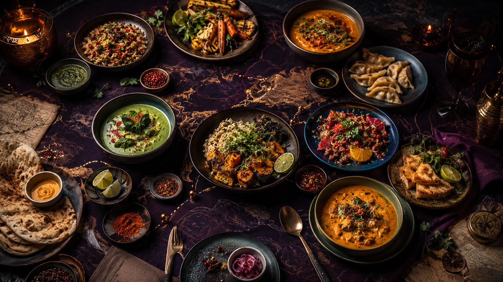

Notes from the
moving kitchen.
Twelve long reads on technique, seasonality, gathering and the quietly transformative details of home cooking.

FIELD NOTE 01 · TECHNIQUE
Fire to Table: Building Dinner Around Char and Smoke
A practical route from controlled heat to layered, balanced plates. Learn how fuel, distance and patience change an ingredient before the garnish ever arrives.
Read the cover story →